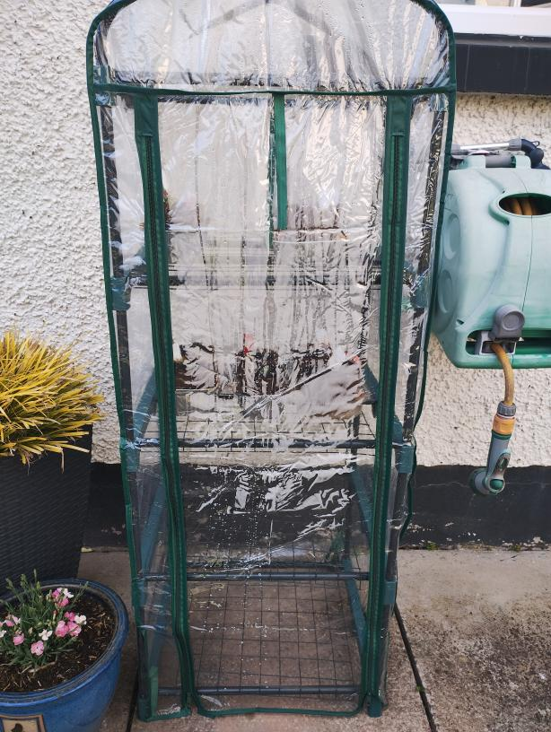
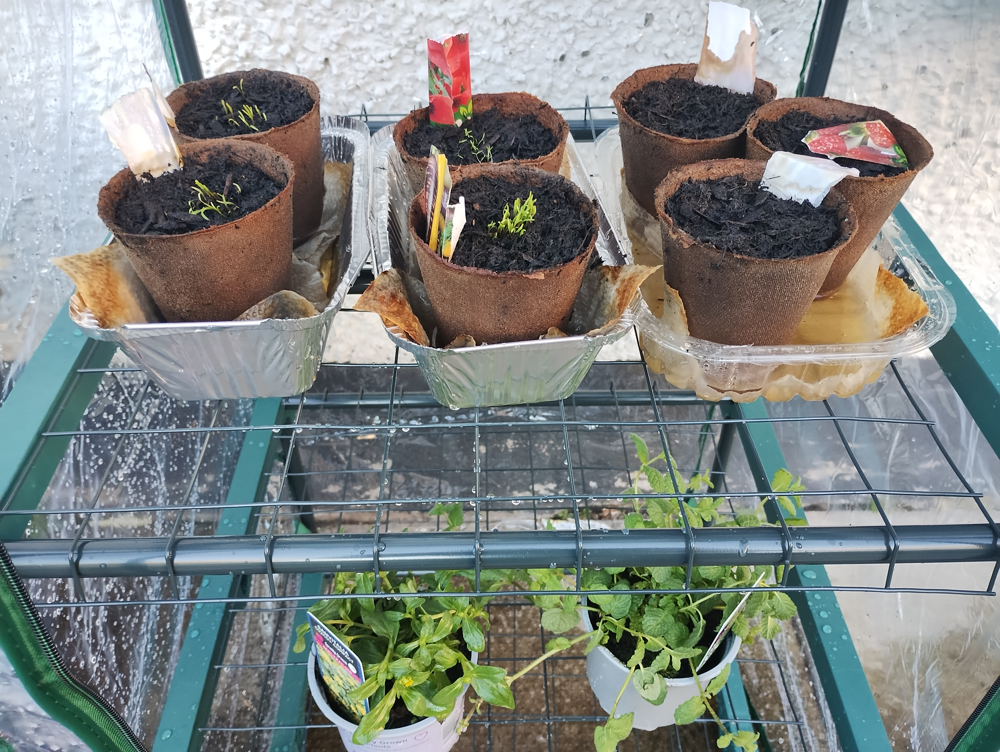

The teens who put down their phones to grow their own food

In this world where smartphones dominate teenagers, taking a break from their phones can open the door to different and new experiences—like growing vegetables. When teens step away from constant notifications and social media, they get a chance to reconnect with nature. Gardening offers fresh air, it teaches patience, responsibility, and rewards them with freshly grown veg.
By planting and caring for vegetables, teenagers learn how food is produced and get a deeper appreciation for what they eat. Watching a seed develop from nothing but a pile of dirt into something they can actually eat can be very satisfying. It also encourages them to eat healthier and maybe try planting different kinds of vegetables. They can share what they grew with friends and maybe encourage them to do what they did and even make it a competition between them.

Distracting them from their phones can be good for their mental health. Being outdoors, getting fresh air and looking after the things they planted can reduce stress and improve mood. It gives their brains a break from the virtual world and lets them experience the real world. This can only be a good thing for their physical and mental health.